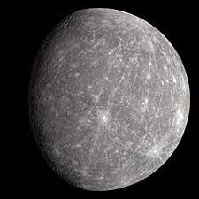
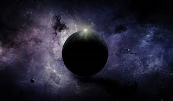

Merkury – najmniejsza i najbliższa Słońca planeta Układu Słonecznego. Jako planeta dolna znajduje się dla ziemskiego obserwatora zawsze blisko Słońca, dlatego jest trudna do obserwacji. Mimo to należy do planet widocznych gołym okiem i była znana już w starożytności. Merkurego dojrzeć można jedynie tuż przed wschodem lub tuż po zachodzie Słońca. Ukształtowanie powierzchni Merkurego przypomina Księżyc: są na nim liczne kratery uderzeniowe i pozbawiony jest on atmosfery. Temperatura powierzchni waha się od −173 °C do 427 °C. W przeciwieństwie do Księżyca, planeta ma jednak duże żelazne jądro, generujące pole magnetyczne stukrotnie słabsze od ziemskiego. Rozmiar jądra sprawia, że Merkury ma jedną z największych gęstości spośród planet Układu Słonecznego (Ziemia ma nieznacznie większą gęstość). Merkury nie ma naturalnych satelitów.